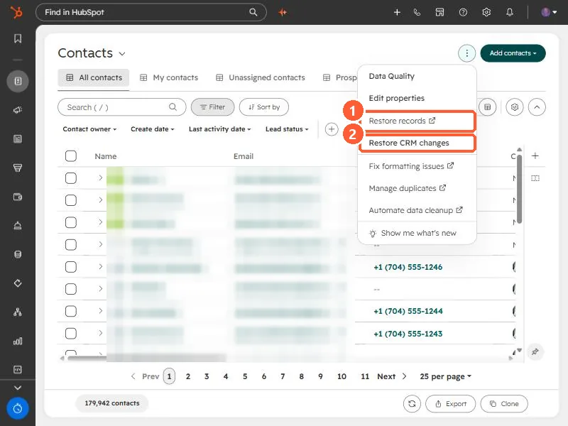
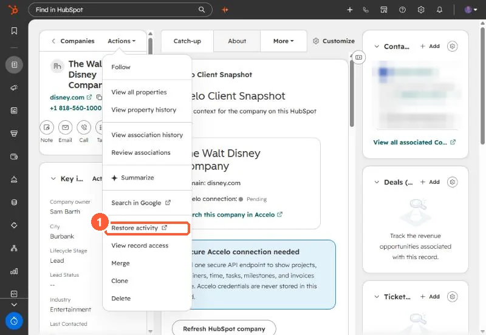

Short answer
HubSpot has three undo tools with different windows. Deleted records can be restored for 90 days from the object's Actions, Restore records, up to 10,000 at a time. Deleted activities (notes, calls, meetings, tasks) come back for 90 days from the record's Actions, Restore activity. Changed values can be rolled back to any point in the last 14 days with Settings, Data management, Backup & Restore, Restore, which undoes workflow, import and manual edits (Starter and above, Super Admin only). Permanent and GDPR deletions are not recoverable.
1. Which tool to use
| What happened | Tool | Window |
|---|---|---|
| Records deleted | Object index, Actions, Restore records (all plans; Account access and Add and edit users permissions) | 90 days |
| Notes, calls, meetings or tasks deleted from a record | Record, Actions, Restore activity | 90 days |
| Property values overwritten by a workflow, import or person | Backup & Restore, Restore tab (Starter and above; Super Admin) | 14 days |
| One property on one record | Undo a value from the property's history on the record | Property history |
| A workflow's own property changes | Restore option in the workflow editor | See the KB |
Both restore entry points sit in the object index's actions menu: Restore records (1) and Restore CRM changes (2).


2. Restore deleted records
- Open the object, such as CRM, Contacts, and choose Actions, Restore records.
- Filter by date, the user who deleted them, or the workflow that deleted them.
- Select records and restore.
- It works for HubSpot-defined objects such as contacts, companies, emails, products and appointments, and for custom objects.
- The page shows and restores at most 10,000 records at a time. Beyond that, restore in batches.
- You can export the deleted records shown on the page to keep a copy outside HubSpot.
- Restoring a contact does not bring back everything. Some associated data is lost when a contact is deleted.
- Permanent and GDPR deletions skip the recycle bin. They are gone for users immediately and purged from HubSpot within 30 days.
The audit log can also restore records from a delete entry. See account security and the audit log.
3. Restore deleted activity on a record
On the record, open Actions and choose Restore activity (1):


A page opens in a new tab with activities deleted from that record in the last 90 days. Select them, or Select all, and click Restore. After 90 days they are permanently deleted.
4. Roll back changes: Restore CRM changes
This is the undo for a bad import or a workflow that overwrote a field on thousands of records.
- Go to Settings, Data management, Backup & Restore, Restore tab.
- Pick the objects and the source of the change: workflows, imports or manual edits. For manual changes you can limit it to certain properties or to one user with Changed by.
- Pick the date and time to roll back to, up to 14 days ago, and click Prepare preview.
- Open the preview, check what will change, and run it.
- Supported objects: contacts, companies, deals, tickets, calls, products, leads, marketing events, orders, tasks and custom objects.
- Rolling back past a record's creation moves that record to the recycle bin. HubSpot's own example: undoing a workflow that created 100 contacts.
- A prepared restore stays available for 14 days. Completed restores stay in Restore History for 90 days.
Act fast. After 14 days this tool cannot help, and you are left with property history on each record. See property history.
5. What is changing for 2027
- Backup & Restore is a settings area now, not a hidden action. HubSpot is adding to it: a public beta exports a CSV summary of each completed or partly failed restore job.
- More objects are covered. Leads, orders, marketing events and custom objects are on the list, so restore works for newer sales objects as well as the classic four.
- Exports are your long-term backup. The restore windows are 14 and 90 days. For anything older, keep scheduled exports, see exports.
Common questions
A workflow overwrote a field on thousands of contacts. Can I undo it?
Yes, within 14 days, with Restore CRM changes filtered to workflow changes. You need Super Admin and a Starter subscription or above.
I deleted contacts by mistake three months ago.
If it was more than 90 days ago, the restore tool cannot bring them back. Re-import them from an export if you have one.
Why can I not see all deleted records?
The restore page shows up to 10,000 at a time. Restore or filter in batches.
Can I restore a contact deleted for GDPR?
No. GDPR and permanent deletions bypass the recycle bin.